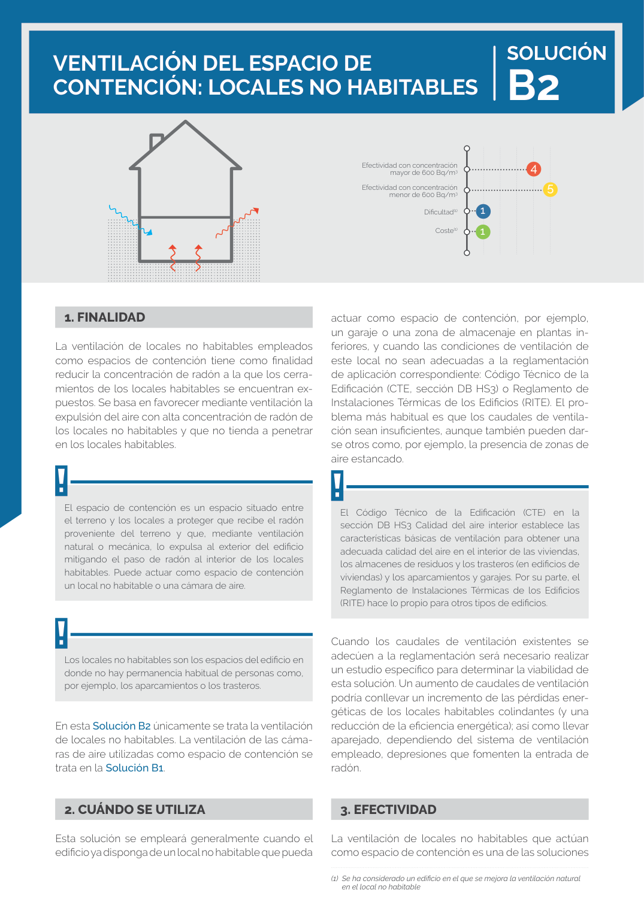

<!doctype html>
<html lang="es"><head><meta charset="utf-8">
<meta name="viewport" content="width=device-width, initial-scale=1">
<title>GUIA · 2. CUÁNDO SE UTILIZA</title><link rel="stylesheet" href="../estilo.css">
</head><body>
<nav><a href="../index.html">Índice</a> › <a href="../doc/guia-pdf-f3314b0414fe-sin-fecha-e58e54b822cf.html">GUIA</a> › 2</nav>

<header class="meta">
<p><a href="../doc/guia-pdf-f3314b0414fe-sin-fecha-e58e54b822cf.html">GUIA</a> · 2. CUÁNDO SE UTILIZA · versión sin-fecha · capa guia</p>
</header>
<div class="cita"><strong>Cita:</strong> GUIA · 2 · 2. CUÁNDO SE UTILIZA · páginas físicas pág. 48-49 (impresas: ['48', '49'])</div>
<p>Formatos: <a href="../../contenido/docs/GUIA-PDF-f3314b0414fe/sin-fecha__e58e54b822cf/apartado/a0166__2-cuando-se-utiliza.json">JSON compacto</a> · <a href="../../contenido/docs/GUIA-PDF-f3314b0414fe/sin-fecha__e58e54b822cf/apartado/a0166__2-cuando-se-utiliza.md">Markdown</a> · <a href="../../contenido/docs/GUIA-PDF-f3314b0414fe/sin-fecha__e58e54b822cf/fuente.pdf">PDF fuente</a></p>
<p><a href="../doc/guia-pdf-f3314b0414fe-sin-fecha-e58e54b822cf.html">Ámbito del documento</a> · <a href="../doc/guia-pdf-f3314b0414fe-sin-fecha-e58e54b822cf.html#ambito">texto del ámbito</a> ·
<a href="../doc/guia-pdf-f3314b0414fe-sin-fecha-e58e54b822cf.html">documento y tablas</a></p>
<nav><a href="guia-pdf-f3314b0414fe-sin-fecha-e58e54b822cf__a0165.html">← 1. FINALIDAD</a> <a href="guia-pdf-f3314b0414fe-sin-fecha-e58e54b822cf__a0167.html">b) Ventilación mecánica →</a></nav>
<h1>2 2. CUÁNDO SE UTILIZA</h1>
<p>Tipo: tablas, figuras · nivel 1 · sección estimada: 2. CUÁNDO SE UTILIZA · padre: </p>
<pre class="literal">2. CUÁNDO SE UTILIZA
Esta solución se empleará generalmente cuando el
edificio ya disponga de un local no habitable que pueda
(1)  Se ha considerado un edificio en el que se mejora la ventilación natural
en el local no habitable

2
Solución B2 • Ventilación del espacio de contención: locales no habitables
B2
2</pre>
<h2>Tablas en estas páginas</h2><ul><li>p. 48 · <a href="../../contenido/docs/GUIA-PDF-f3314b0414fe/sin-fecha__e58e54b822cf/tabla/p0048_t01.json">p0048_t01.json</a> · <a href="../../contenido/docs/GUIA-PDF-f3314b0414fe/sin-fecha__e58e54b822cf/tabla/p0048_t01.csv">.csv</a></li><li>p. 49 · <a href="../../contenido/docs/GUIA-PDF-f3314b0414fe/sin-fecha__e58e54b822cf/tabla/p0049_t01.json">p0049_t01.json</a> · <a href="../../contenido/docs/GUIA-PDF-f3314b0414fe/sin-fecha__e58e54b822cf/tabla/p0049_t01.csv">.csv</a></li></ul><h2>Página visual</h2><figure><a href="../../contenido/docs/GUIA-PDF-f3314b0414fe/sin-fecha__e58e54b822cf/figura/p0048.png"></a><figcaption>Página visual 48 (fuente para fórmulas/tablas/figuras)</figcaption></figure><figure><a href="../../contenido/docs/GUIA-PDF-f3314b0414fe/sin-fecha__e58e54b822cf/figura/p0049.png"></a><figcaption>Página visual 49 (fuente para fórmulas/tablas/figuras)</figcaption></figure><p class="aviso">PDF fuente redistribuible: copia fiel enlazada en esta página (SHA256 verificado).</p>
<footer>Generado estáticamente desde JSON normalizado; sin JavaScript ni servicios externos.
El JSON es la fuente; este HTML es caché reproducible.</footer>
</body></html>
